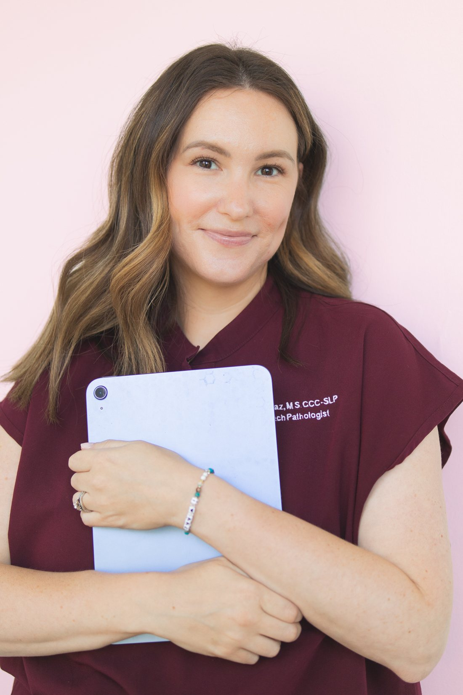
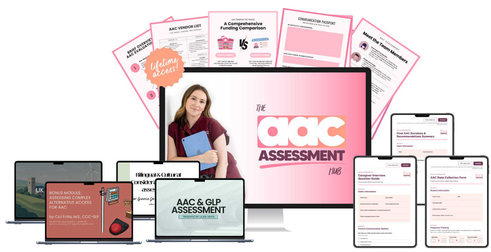
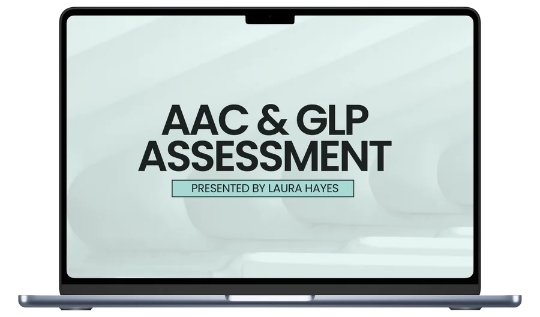
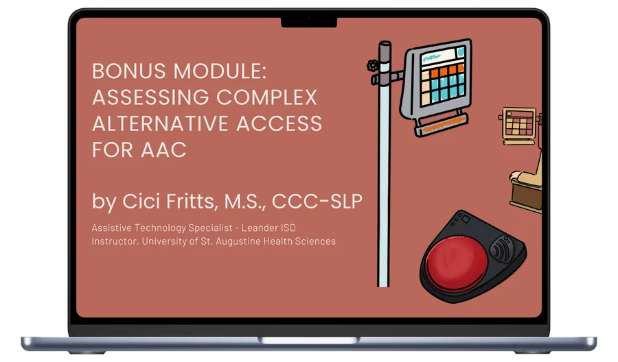
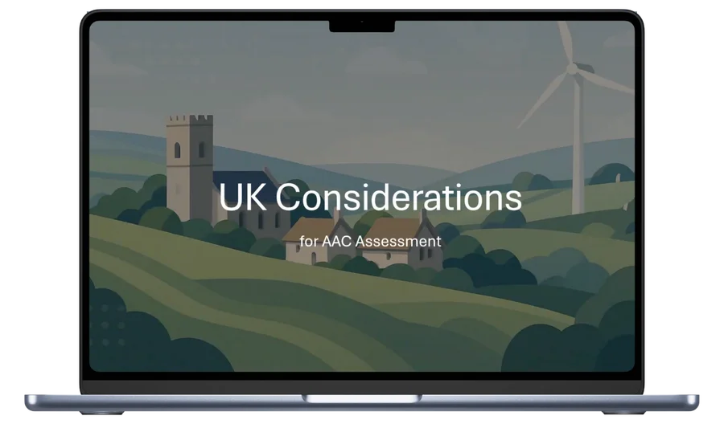
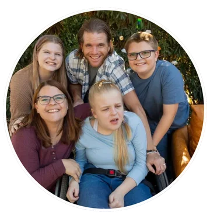
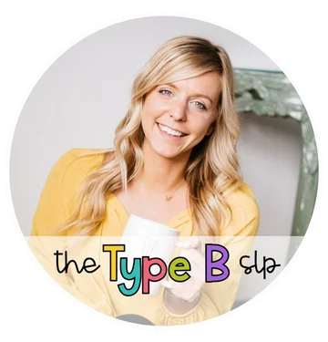

Fast-action discount: get the AAC Assessment Hub for $167 (regularly $197). Ends in$167 fast-action price · ends in{{cdM}}m{{cdS}}sEnroll Now
Fast-action discountSave $30
Say hello to confident AAC assessments
Wave goodbye to late night Googling and overwhelm and finally find all your AAC assessment answers in one spot. The AAC Assessment Hub provides a step-by-step process for conducting assessments along with data sheets, downloads, and more.
Struggling to navigate AAC assessments on your own?
The world of AAC can sometimes feel like the wild, wild west. With no formal or standardized assessment processes in place, moving forward with complete confidence is just plain hard. If you’ve ever felt lost when it comes to conducting an AAC assessment, you 👏 are 👏 not 👏 alone.
Many SLPs face the exact same challenges
Deer in headlights
You're unsure where to start when an AAC referral comes in, leaving you looking like a deer in headlights when parents and clients are looking to you for guidance.
Afraid of the wrong call
You don’t know how to trial devices or make feature-matching decisions and making the wrong decision or not educating yourself first feels catastrophic and unethical.
Buried in paperwork
Writing a report and securing funding feels like a maze of paperwork on top of a caseload we both know is more than you signed up for.
No clear roadmap
You want to support your clients effectively but don’t have a structured approach and without one, you fear your clients might end up regressing or not make progress at all.

Hi, I’m Emily, and trust me when I say…
Been there. Done that.
When that first AAC assessment came across my desk, I might have panicked. Just a little 🤏. So, I did what everyone does.
I Googled.
I searched in textbooks from grad school.
I Instagrammed.
I made phone calls to previous mentors.
But nothing made me feel confident in what I was doing.
That feeling is beyond overwhelming! But here’s the good news: You don’t need to be an AAC specialist to conduct a solid assessment and make informed recommendations. With expert guidance, practical tools, and clear workflows, you can build confidence and competence in AAC evaluations.
I’ve been an SLP for a decade, given presentations on both national and international stages, become a sought after leader in AAC, and I’ve finally created the assessment tool I wish I had when I first got started with AAC assessments.
No need to turn over every proverbial rock to find the AAC assessment solution.
it’s finally here.
Introducing…
The AAC Assessment Hub

Your step-by-step training for AAC assessments along with a growing library of resources and support.
The AAC Assessment Hub is a comprehensive, practical training program designed to take you from referral to funding approval with confidence and ease. This program removes the guesswork and delivers a clear process with additional resources so you’ll always be up to date on the latest in AAC.
Inside, you’ll learn how to…
You'll learn to
Conduct a structured AAC assessment with clarity & confidence.
You'll learn to
Trial multiple AAC systems and collect meaningful data.
You'll learn to
Make informed feature-matching decisions.
You'll learn to
Write clear, persuasive reports for funding approval.
You'll learn to
Streamline the entire process without unnecessary stress.
Emily, thank you for sharing such practical and affordable tools for assessing and implementing AAC. I can't wait to continue learning with the rest of the course!!
“This course is a must have for any busy SLP who wants to feel confident with AAC!
Emily walks you through the entire process from start to finish, and the information she shares is truly invaluable as it will help you take action immediately! You don’t have the be an AAC specialist to give your students access to robust communication, and Emily’s course will have you wondering why you didn’t start introducing AAC sooner!!”
The curriculum
Here's what you'll learn inside
Module 01
Understanding the AAC Assessment Process
3 lessons · tap a lesson to see inside
Lesson 1AAC Assessment Overview
A complete start-to-finish roadmap you'll follow throughout the course and in each AAC assessment, so that you always know exactly where you are and what’s coming next.
What the research says makes AAC assessment so complex and the major difference between AAC clinical specialists and general practice SLPs when it comes to AAC assessment.
A simplified scope of an AAC assessment covering domains from communication to motor skills and cognition, so that you don’t miss a single piece of information because you didn’t know what to look for.
An overview of stakeholders and their unique roles in the AAC assessment process, because the SLP isn’t the only one on the team.
Lesson 2AAC Pre-Assessment
The referral process across settings and ages, so you know exactly how to get started no matter where you are working.
A Caregiver Mock Interview plus an 8-page questionnaire to guide you through getting those family-centered insights you wouldn’t get otherwise during your assessment.
How to obtain loaner devices to trial during the assessment by utilizing AAC companies & manufacturers, school district lending libraries, state assistive tech programs, and non-profit organizations.
Lesson 3Executing the Evaluation
The exact skills you should be observing during the assessment and how to do this across both structured and unstructured opportunities for communication.
Real-life video example with a detailed case study that explains my thoughts during the AAC assessment, so that you can see what this looks like in action.
Your complete assessment toolkit including SETT, DAGG-3, Communication Matrix, and the WATI Communication Form, all taught with when-to-use guidance, so that you’re never stuck defaulting to the one tool you vaguely remember from your grad school practicum.
How to document your data to support your funding report later, including access to my AAC data collection form so you can follow a template and capture every detail.
Module 02
Key Considerations for AAC Selection
3 lessons · tap a lesson to see inside
Lesson 1Feature Matching Essentials
A complete overview of the key principles of feature matching along with The Five Key Components of Feature Matching (McNaughton & Light, 2013).
A massive deep dive on feature matching to include funding sources, access, symbols, linguistics, display and editing, grid size, voice, diversity and inclusion, along with a mega list of questions to ask yourself so that you can analyze each feature with as much detail as I do.
My exact feature matching method covering the core design and accessibility components that actually help you make a decision, so that your recommendation is defensible to a team, to a funding source, and to yourself when you start to second-guess it.
Lesson 2Overview of Common Software/Hardware Options
Live, screen-shared walkthroughs of 7 major apps (Proloquo2Go, TouchChat, LAMP, TD Snap, Avaz, Grid for iPad, and Unity), plus recommendations for text-based systems.
Hardware options for vendors like TobiiDynavox, PRC-Saltillo, Smartbox, Control Bionics, AbleNet, so you know what your device options are based on your feature matching data.
Lesson 3Making a Decision & Final Recommendation
The AAC Trials Decision-Making Matrix for synthesizing AAC assessment and trial data to make a confident, data-driven final recommendation backed by real-world case studies to show how it works in practice, so that “I think this one’s probably right” becomes “here’s why I chose this system and why.”
3 real-life case studies that walk you through the entire assessment with my exact thoughts and justification for final device recommendations, so that you can see it in action.
Module 03
Navigating AAC Funding
3 lessons · tap a lesson to see inside
Lesson 1Navigating AAC Funding
A full breakdown of the school-based funding process including an overview of special education law and common challenges like “we don’t have the budget for that” along with solutions so that your device actually gets funded.
A full breakdown of the insurance-based funding process including terminology like DME, SGD, E-codes for billing, and letter of medical necessity along with common challenges and how to navigate that like a pro.
Alternate funding options like self-pay and grants so that you don’t leave families hanging when someone decides they aren’t going to pay for an AAC device.
Lesson 2Essential Documentation for Funding
A real funding portal walkthrough, broken down step-by-step, so that you’re writing a report that includes every nitty gritty detail insurance is looking for.
The funding report template library with real, pre-formatted report shells so that you’re editing a report someone already got approved, not starting from scratch every time.
Your personal denial response playbook to navigate writing an addendum, filing an appeal, and escalating to peer-to-peer review so that a denial letter doesn’t feel like the end of the world.
Lesson 3Next Steps - Implementation and Support
Key steps in setting up and programming a new AAC system so that it’s ready to use and customized exactly to what your user needs.
How to develop meaningful goals across the four AAC competency areas so you aren’t just writing goals for requesting “more goldfish please.”
Tips for integrating the AAC device into daily routines and how to create a support plan that gets the whole team involved.
Course downloads
Plus every form, guide & template you need to actually use it
8 ready-to-use downloads
AAC Assessment Workflow Guide
Stakeholder Roles & Responsibilities
AAC Caregiver Interview Questionnaire
AAC Data Collection Form
Feature Matching Questions to Ask Yourself
Final AAC Decisions & Recommendation Summary
AAC Implementation Checklist
3 Sample AAC Evaluation Funding Reports
I just started the feature matching modules!!! My mind is blown!! Emily you are providing what I have always looked for in an AAC course!! I’ve taken so many courses at this point, but this was the missing piece! I am beyond nerding out 😁😁
CWChiquita G W · AAC Assessment Hub student
Introducing
Four new bonus modules!

Bonus 01
AAC & GLP Assessment
Presented by Laura Hayes, M.S., CCC-SLP
Working with gestalt language processors can feel like walking through a maze without a map — especially when AAC gets thrown into the mix. This bonus module breaks it down so you can actually see the path forward. You’ll learn what makes GLPs tick, how AAC can support their natural language journey.

Bonus 02
Assessing Complex Alternative Access for AAC
Presented by Cici Fritts, M.S., CCC-SLP
Eye gaze, switches, head tracking—oh my. When it comes to complex access, things can get complicated fast. This module helps you figure out what actually works for each communicator so nobody gets left out of the AAC conversation.
Bonus 03
Bilingual & Cultural Considerations in AAC Assessments
Presented by Bianca De Leon, M.A., CCC-SLP
Bilingual families shouldn’t have to choose which language gets to “count.” In this bonus, we’ll bust the biggest myths about bilingual AAC and show you how to create assessments that celebrate, not erase culture and language. Because when families feel seen and understood, communication blooms.

Bonus 04
UK Considerations for AAC Assessment
Presented by Charlie Danger, MSc, OT, ATP
AAC looks a little different across the pond, and this bonus walks you through what that means for assessment, funding, and real-world support in the UK. You’ll get an inside look at how England, Scotland, Wales, and Northern Ireland each approach AAC—and how to help families navigate those systems without losing their minds.
Bonus
Lifetime access to downloads and new resources to support you along the way
Next week or next year, it’s all here whenever you need it. No time limits, ever.
Hi Emily! I just finished your AAC evaluation course and it was AMAZING! Thank you so much for creating this resource! I just joined the facebook group and I’m excited to have that resource as well! Thanks again!
EMEmily M. · AAC Assessment Hub student
Future-proof purchase
Buy it once. Keep getting more.
You get the AAC Hub right now at $167. For any future updates, any additional bonuses, or any live experiences related to the AAC Assessment Hub, you’ll automatically receive instant access to those things at no additional cost.
Can you imagine?
Be completely confident in every AAC assessment you conduct
You know exactly what to do when an AAC referral comes in.
You can confidently trial multiple devices and make data-driven recommendations.
You write funding reports that get results without unnecessary revisions.
You no longer feel the need to refer out to a specialist due to lack of experience.
That’s what’s waiting for you inside The AAC Assessment Hub!
Parent & advocate
“Emily is down to earth, and teaches in such an easy to understand way.”
I love how Emily brought up stakeholders, as a parent to a non speaking child who is now an adult getting family In put and then carryover is very important for the success of the AAC user. I also loved the lesson on referral process across settings very helpful. Emily is down to earth, and teaches in such an easy to understand way. She is very humble but also a badass AAC SLP.

Courtney Burnett
@courtneyburnettadvocate
Real talk
Worried About Time, Cost, or Experience Level?
Let's talk about it.
Time
“I have a big caseload and I'm juggling multiple things. I don’t have time for a long course.”
The lessons are bite-sized and packed with actionable insights, so you can learn at your own pace. You also have lifetime access to the program so take it over the summer, take bits and pieces at a time, whatever your schedule allows.
Experience level
“I’m not an AAC specialist. Will I even understand the material?”
You don’t need to be an AAC Specialist! This course is designed for any SLP who wants to improve their AAC assessment skills. You can use this course to jump start your AAC specialization or use it as a go-to resource whenever an AAC assessment hits your desk.
Um can I just say this is amazing? This is such a gift! The info is synthesized so beautifully... Thank you Emily! I'm excited to rework my school-based SLP PD materials to be more clear and digestible like yours. I'm in awe, and truly so grateful. ❤️❤️❤️❤️🔥✊
KMKatie M. · AAC Assessment Hub student
Laura Hayes
@aac_innovations
Seasoned SLP review
“For any professional seeking to elevate their AAC practice, this course is an absolute must!”
As a seasoned speech-language pathologist, I cannot overstate the transformative impact of this groundbreaking AAC assessment course.
What sets this training apart is its meticulously crafted roadmap that takes clinicians from novice to expert in every critical aspect of augmentative and alternative communication assessment. The course's innovative approach to evaluation for AAC systems provides crystal-clear guidance on conducting thorough evaluations, with hands-on techniques for precise trials and data collection that are immediately applicable across school and medical settings. The comprehensive module on device selection and feature matching offers clinicians a strategic framework for matching communication technologies to individual client needs. The funding and report writing sections are a game-changer, providing the complex landscape of insurance submissions and educational documentation with practical, step-by-step strategies that will consistently help provide faster access to AAC devices for users and communication partners who support them. It finishes with therapeutic implementation support, including goal ideas, to take the next steps once a device is obtained. For any professional seeking to elevate their AAC practice, this course is an absolute must!
Everything you get
One more time. Here’s everything you get inside the Hub.
3 core modules
Understanding the AAC Assessment Process · Key Considerations for AAC Selection · Navigating AAC Funding
10 printable & downloadable tools and resources
AAC data collection forms, AAC caregiver interview questionnaires, sample AAC eval reports, and more
4 bonus modules
AAC & GLP Assessment · Assessing Complex Alternative Access · Bilingual & Cultural Considerations · UK Considerations
Future-proof purchase
Receive all future updates to the AAC Assessment Hub at no additional cost
2-week money-back guarantee
Try it risk-free for two weeks
Lifetime access to the course & tools
Whether you need it next week or a year from now, there are no restrictions on when or how long you can use or access the course.
Despite having almost 10 years of experience as an SLP, I’m continually reminded of how much there is to learn, particularly when it comes to AAC assessments. I’ve been following Emily on Instagram forever, and have always enjoyed her AAC tips and content. So when I found out she was launching a course on AAC assessments, I knew this course would be invaluable. I especially enjoyed the real-life application case studies within the course (next best thing to getting that hands-on experience), as well as how she tailored her guidance for different settings, which was incredibly helpful given my roles in both school-based and private practice environments. I highly recommend this course to any SLP seeking to strengthen their AAC assessment skills! 🙌

Abby
@the.type.b.slp
Yes! This course can earn you 8 hours of PDHs. After completion of the course, you’ll be asked to take a short quiz to ensure you’ve gone through the course. Upon passing the quiz, a certificate of completion will be sent to your inbox.
Nope! You have lifetime access to the course and the course does not expire. In addition, you have access to all future iterations of the course so any updates, new resources, or tools that we create will automatically be added to your course portal. You can access the course at any point in time in the future.
Yes we do! However, we only accept purchase orders on 3 or more purchases. In addition, there is a $20 processing fee added onto the order. If you need 3 or more purchases, please fill out this form to start the process. Terms are NET30.
No, anyone can take this course! However, only SLPs are allowed to sign and submit funding reports to insurance.
This course goes beyond just conducting an AAC assessment—it also guides you through the entire funding process, ensuring you can complete the referral from start to finish. Unlike other courses that focus primarily on the evaluation itself, this course covers essential technical aspects such as feature matching, hardware/software options, and securing loaner devices. Additionally, enrollment includes access to a free community group, providing ongoing support and collaboration—something not commonly offered elsewhere. Whether you’re new to AAC or an experienced SLP looking to build confidence in assessments, this course is designed to help you independently navigate the full assessment-to-funding journey.
From confusion to clarity
Let's change the way you assess AAC forever.
Don’t let uncertainty hold you back from helping your clients communicate effectively. The AAC Assessment Hub gives you everything you need to take control of the process and provide life-changing recommendations.
AM
“Currently doing Emily’s AAC Assessment course and I highly recommend it! Very thorough!”
Ali M. · AAC Assessment Hub student
All three modules with 10 complete video lessons
A growing library of downloadable cheat sheets, templates, and data collection tools
Future-proof: all future updates to the AAC Assessment Hub at no additional cost
Lifetime Access to learn at your own pace
Get the AAC Assessment Hub for $167 with the fast-action discount!